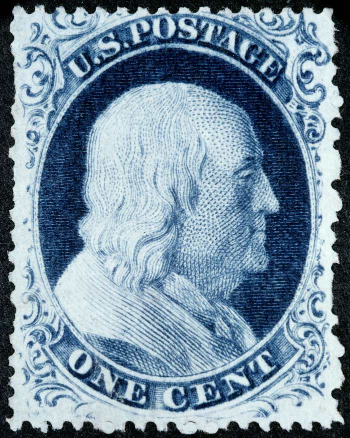
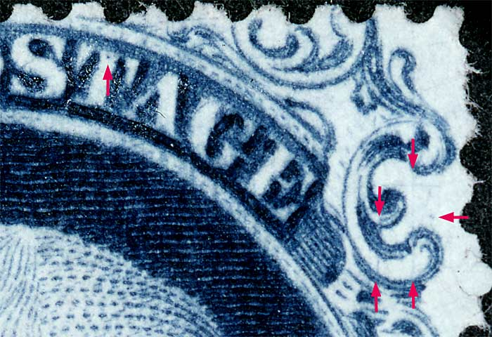
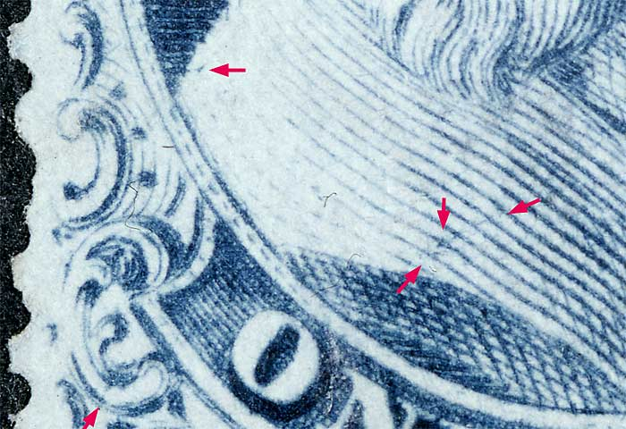
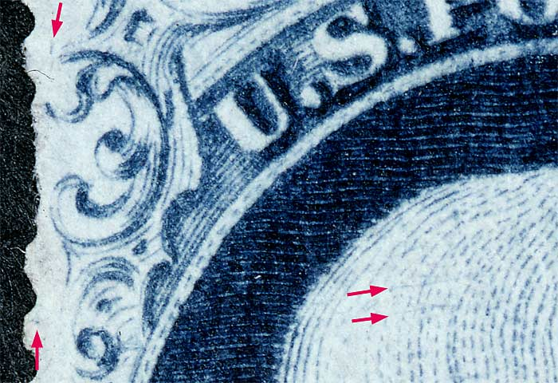

1¢ Franklin Issue of 1851-1857, PLATE 4 Position 20R4 |
|
Blue, Type IIIA, Relief B, Transfer Roller Number 2. PLATING NOTES: The plating of positions 20R4 and 30R4 from the Neinken book can be a challenge as many marks found on 20R4 are not noted in the plating diagram. There are several plating marks which identify this position. There is a dot on the shoulder at the far left side. There is a dot in the top of the ‘T’ of ‘POSTAGE’. There are several faint near-horizontal scratches in the head. There is a scratch touching ornament N. The bottom scrolls are very weak. Most importantly, there is a vertical guide line between ornaments L and M which is quite close to ornament L1. Image Courtesy of Timothy McRee |
|  |
Figure 1. (BELOW) Small dot of color over Ornament M as indicated in the Neinken plating diagrams. The vertical scribe lines and the DOT in the T of POSTAGE is not illustrated in the plating diagram. |
|
 |
| Figure 2. (BELOW) Small dot of color in the left most portion of shoulder. A blur of color in Ornament H and blotch of color over the N of ONE not illustrated in the Neiinken plating diagram. |
|  |
| Figure 3. (BELOW) Small dash of color over Ornament A and a DOT of color to the left of Ornament C. Additionally there are a number of short fine plate scratches scattered thoughout Franklins head. These are not illustrated in the plating diagrams. |
|  |
| DISCLAIMER and COPYRIGHT INFORMATION: Thanks for visiting this site. I hope you learn something new as we are making new discoveries all the time. You, the visitor, have my permission to link to my pages and to share the INFORMATION with others. The images themselves fall under the fair use guidelines established by the United States Congress and Copyright law. Basically contact us before using. I also ask in return that you send me an e-mail if I have made a mistake, or have made some other technical blunder that in my rush to put these pages up would cause the visitor confusion. Please also visit my other website at www.slingshotvenus.com. and support the live music arts. While your there, be sure to purchase our music. There are not many philatelic rock stars around and we need all the help we can get. :-) I can be reached at: nerdman@ix.netcom.com REVISED 12.31.2015 |